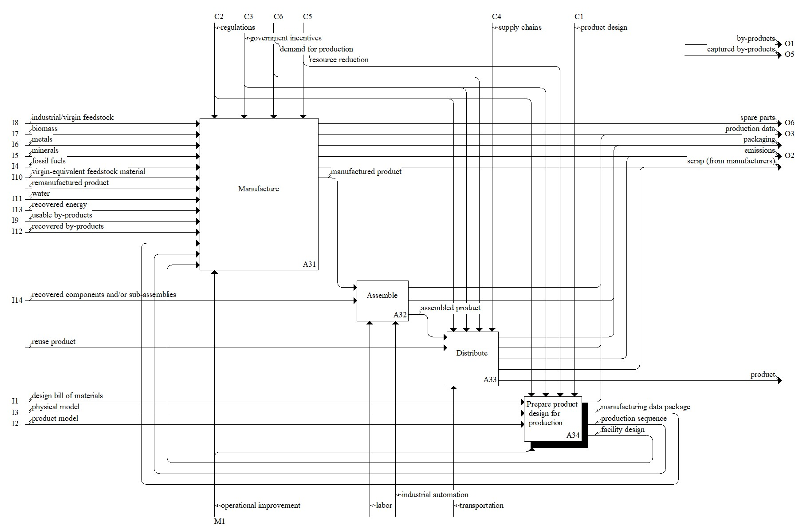

Description
The production stage model consists of activities that are relevant to creating the product. A key difference for the production stage within a circular economy model is the desire to minimize waste and utilize recovered energy, materials, and goods from downstream stages during production. Click the individual Concepts for descriptions and examples of inputs, outputs, controls, and mechanisms relevant to a circular economy.Parent Activity: Produce Product